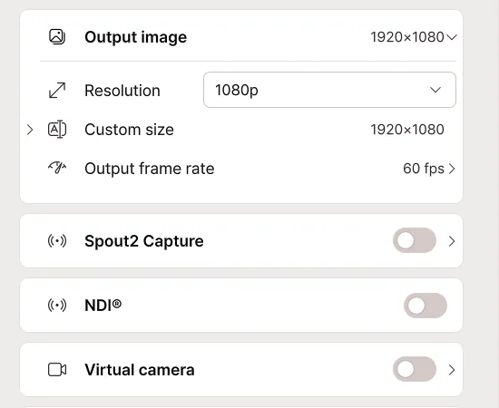
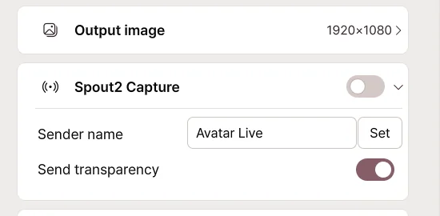
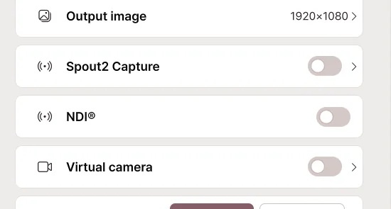
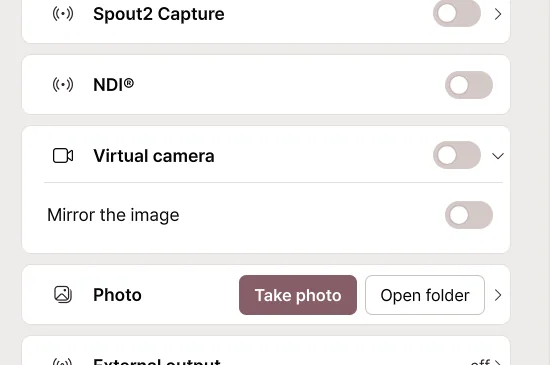
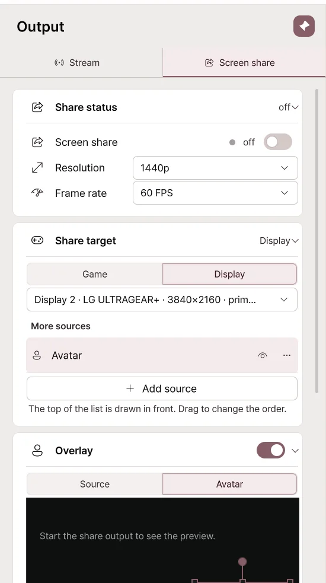
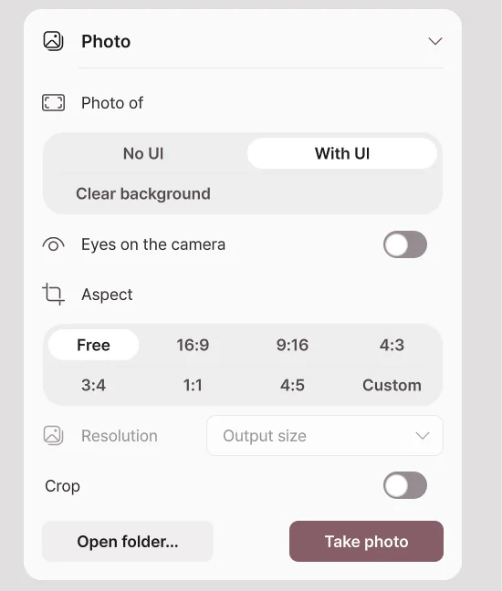

Output
You can send the completed avatar screen to OBS, Discord, or Zoom, or save it as a photo or video.
What method should I use?
| Desired Feature | Function to Use |
|---|---|
| Putting a Transparent Avatar into OBS on This PC | Spout2 |
| Send video to another PC | NDI® |
| Show on the camera of the video call | Virtual camera |
| Share games and avatars together | Screen sharing |
| Broadcasting with a friend's avatar | Remote Collaboration (Broadcast → Connections) |
| Create Photo/Video Files | Photo & Recording (Studio → Photo & Recording) |
NDI® is a registered trademark of Vizrt NDI AB. Official NDI Information
Output Image

| Item | If changed |
|---|---|
| Resolution | Increasing it makes the image clearer but puts more load on the PC. |
| FPS | Increasing it makes movement smoother but increases the load on the PC and network. |
| Screen Ratio | Changes the shape of the broadcast screen, such as width and height. |
| Output Target | Sends the footage from the working scene view or the selected studio camera. |
Basic supports up to 1080p with a watermark, while Pro supports up to 4K with output without a watermark.
Spout2
The video from Avatar Live is sent to OBS on the same Windows PC.

- Close OBS and install the OBS Spout2 plugin.
- Restart OBS.
- Turn on Avatar Live output → streaming → Spout2.
- In OBS, go to Sources → + → select Avatar Live from Spout2 Capture.
- To use a transparent background, go to Studio → Background → Transparent, and turn on Composite with alpha in OBS.
| Item | What it does |
|---|---|
| Spout2 Switch | Sends or stops the video. |
| Sender Name | This is the name that appears in the OBS source list. |
| Apply | Confirm the changed transmission name. Select the new name again in OBS as well. |
| Send alpha | Sends the background transparency as well. |
The usage conditions for the Spout2 and OBS receiver plugin follow the Spout2 notice.
NDI
It sends video to OBS and other PCs over the network. Both Basic and Pro are supported.

- Close OBS on the receiving PC.
- Install DistroAV and the NDI Runtime required for that version.
- In Avatar Live, turn on Output → Broadcast → NDI.
- In the receiving OBS, go to Source → + → NDI Source and select Avatar Live.
To check without OBS, you can use NDI Tools' Studio Monitor. The transmitting PC and receiving PC must be on a network that can communicate with each other.
Check the usage conditions for NDI Runtime, NDI Tools, and DistroAV in NDI Notice.
Virtual Camera
It is a method of choosing an avatar from the camera list of Discord, Zoom, etc.

- Register the device by installing a virtual camera. Windows administrator approval is required.
- Turn on the virtual camera switch.
- From the list of cameras in the app you will use, select Avatar Live Camera.
It supports up to 1920×1080, 30fps, and does not transmit transparent backgrounds. If the new device is not on the list, restart the receiving app.
Screen Share
You overlay an avatar on top of a game or program and send it through Discord, etc.

- Output → Open screen sharing.
- Select a game or display and choose who to share it with.
- After adjusting the avatar's position and size, turn on screen sharing.
- In Discord screen sharing → select Avatar Live Share Output in the application.
| Control | Things that change |
|---|---|
| Avatar Position·Size | Changes the position and size of the avatar placed on the game. |
| Audio target | Choose the sound to share from Game, Desktop, or the selected app. |
| App Volume | Changes the sound volume on the receiving side. 0% is mute, 100% is the original volume. |
| Additional Source (Pro) | Overlaps with other windows or monitors. Sources higher on the list are displayed in front. |
When shared sound does not play
If a message appears stating that there is no virtual audio device, you can use the virtual audio driver installation. This button is the path to install VB-Audio's VB-CABLE. After installation, check whether the Windows default playback device is the headphones or speakers you usually use.
VB-CABLE is a donationware product from a separate developer. You can check the usage conditions, support, and license information at VB-CABLE Notice.
Photos and Recording
The Studio → Photo & Recording tab holds the camera screen, photo and recording, in that order.

- Camera screen: Choose screen decorations that look like a phone or camcorder, and their ratio and style.
- Photo: Saves the current output screen as a PNG.
- Crop: Cuts the area to include in the photo.
- Ratio: Chooses the shape of the photo such as landscape, portrait, or square.
- Resolution: Sets the pixel count of the saved file.
- Recording (Pro): Saves video as MP4. Press stop after starting to complete the file.
- Mic sound: When on, your microphone and, while screen sharing, the shared game's sound are mixed into one track. When off, only the game's sound goes in; without screen sharing, the video is recorded without sound.